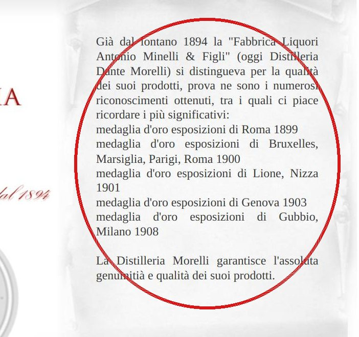

01Non c'è la versione per telefono
Le pagine non hanno l'istruzione che le adatta allo schermo del telefono (il «meta viewport», nel codice della pagina). Da telefono si vede la pagina del computer rimpicciolita, con il testo piccolo e giustificato.